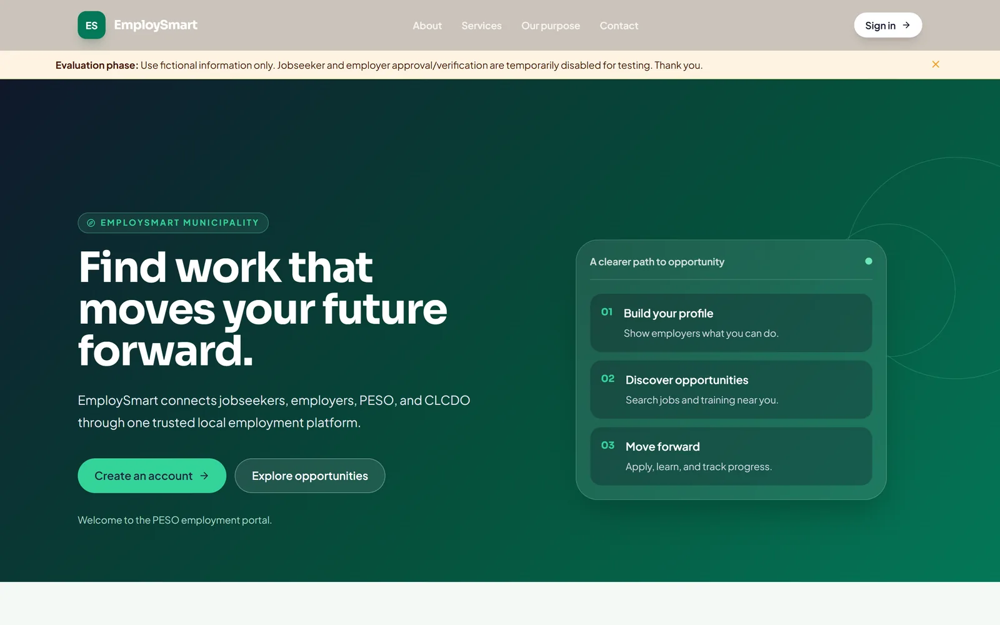
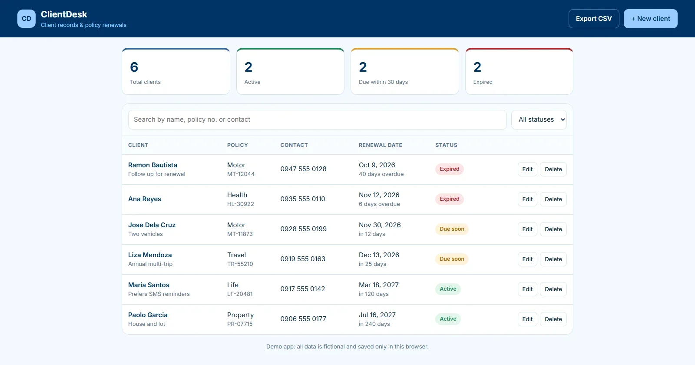

CapstoneEmploySmart
Job-placement platform connecting jobseekers, employers and the local PESO, with résumé parsing and ranked job matches.
Hello, welcome to my portfolio 👋
I'm a fourth-year BS Information Technology student at NEUST and a co-developer of EmploySmart. Before IT, I spent two years as an encoder and office staff member, so I know how much good systems matter to the people using them.
I'm Brian Jules C. Asuncion, a Bachelor of Science in Information Technology student at Nueva Ecija University of Science and Technology.
From 2021 to 2023 I worked as an encoder and office staff member at an insurance company. I processed applications and renewals, managed client records and assisted walk-in clients every day. That job taught me accuracy, patience and how to explain things clearly.
Now I bring that experience into IT. I co-developed our capstone, EmploySmart, a job-placement platform for local government, and I build small web apps like ClientDesk and TaskFlow to keep sharpening my skills.
Career objective To start my IT career as an OJT trainee or entry-level developer / IT staff, where I can contribute to web projects, keep data accurate and secure, and keep growing under experienced professionals.
Used in: EmploySmart, ClientDesk, TaskFlow · Certified: IT Specialist, HTML and CSS ✓
Used in: EmploySmart, BSIT coursework
Used daily for coursework and projects
Used at: SCG Insurance Company, 2021–2023
Backed by: Wadhwani JobReady (With AI), Advanced Level

CapstoneJob-placement platform connecting jobseekers, employers and the local PESO, with résumé parsing and ranked job matches.

PersonalClient records and policy renewal manager that flags active, due-soon and expired policies, with CSV export.
 Personal
PersonalDrag-and-drop task board with priorities, due dates, overdue alerts and a progress bar.
November 2026
Two personal web apps with live demos and source code on GitHub.
November 2026
Completed 75 hours of employability training and in-class application through NEUST.
October 2026
Industry certification from Certiport, Pearson and CertNexus, verifiable online.
2026
Multi-role job-placement platform for PESO, employers and jobseekers, deployed online for its evaluation phase.
Present · 4th year
Nueva Ecija University of Science and Technology (NEUST)
August 2021 – August 2023
SCG Insurance Company · Brgy. Barrera
Wadhwani Foundation · Skill Readiness Certificate
Completed November 05, 2026 through NEUST. 75 hours of training and in-class application.
View certificate (PDF)Certiport · Pearson · CertNexus
Looking for an OJT trainee or an entry-level team member? I'd be glad to hear from you.
Emailbrianjulesasuncion@gmail.com GitHubgithub.com/JulzionLocationNueva Ecija, Philippines